풍요로운 곡창과 수려한 청정지역
전라남도는 우리나라의 서남부에 위치한 도이며. 북으로는 노령산맥을 경계로 전라북도와 접하며 동으로는 지리산과 섬진강을 끼고 경상남도와 접해 있습니다. 서쪽과 남쪽은 바다를 끼고 있으며, 우리나라의 대표적인 리아스식 해안을 이룹니다. 도의 신안군 홍도에서 여수시 돌산면에 이르는 지역 일대가 다도해해상국립공원으로 지정되어 있습니다.
Food
"전라남도 식물나라"
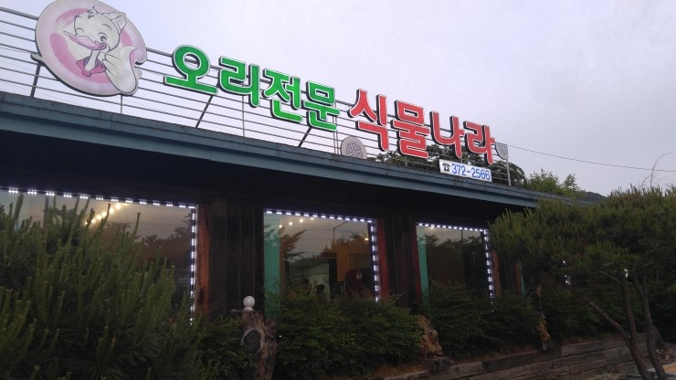 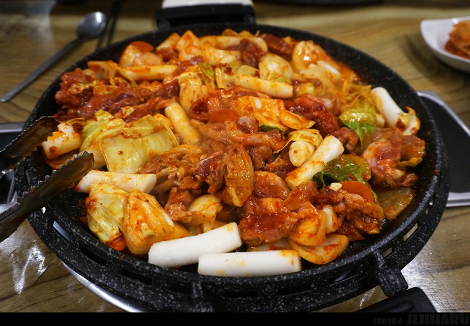⭐️⭐️⭐️⭐️
전라남도 골목골목 가야지 나오는 숨겨진 음식점 식물나라
화순오리전문점입니다. 메뉴는 한방약오리, 오리주물럭, 오리로스, 오리탕 등 다양한 종류의 오리요리를 즐길 수 있습니다 . 합리적인 가격으로 깔끔하고 다양한 밑반찬과 함께 맛도 건강에도 좋은 오리요리를 맛볼 수 있습니다.
진우네 집국수
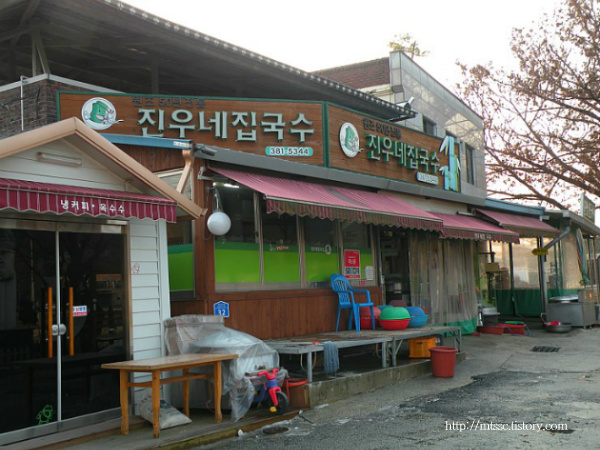 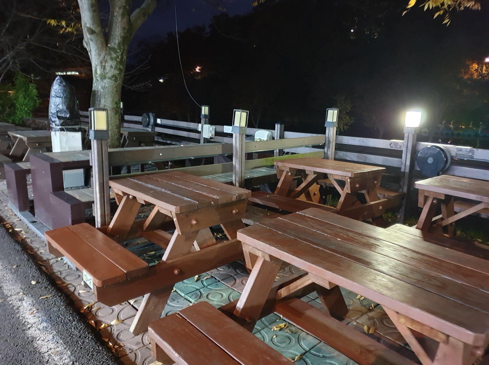⭐️⭐️⭐️⭐️
담양 국수거리에서 원조집으로 불리고 있는 '진우네집국수'. 관방제림 둑길에 위치한 50여 년 가까이 되는 국수 전문점으로 어머니에 이어 아들 이진우 씨까지 2대에 걸쳐서 운영하고 있는 국수 맛집입니다.
대표 메뉴는 중면으로 씹는 맛이 풍성하며 양념이 주방에서 비벼져 나와 매우면서도 달콤함이 느껴지는 '비빔국수'입니다...
자리가 항상 부족하므로 꼭 가면 먼저 자리를 잡는 것 을 추천드립니다.
군대에 있을 때 외박나와서 먹었던 기억이 세록세록 납니다 ^^
View
'순천 만습지'
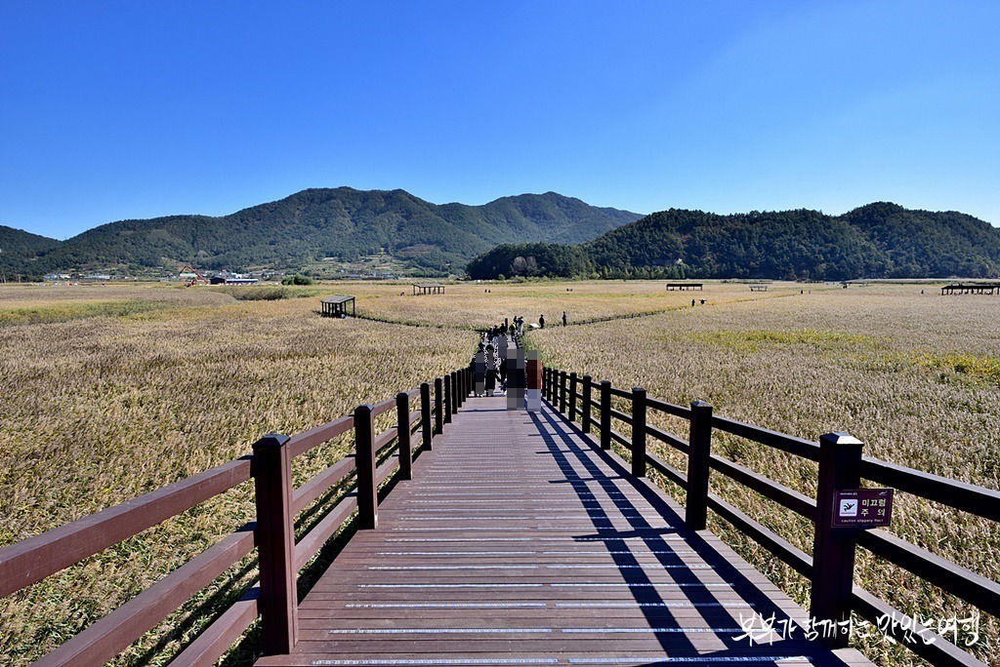 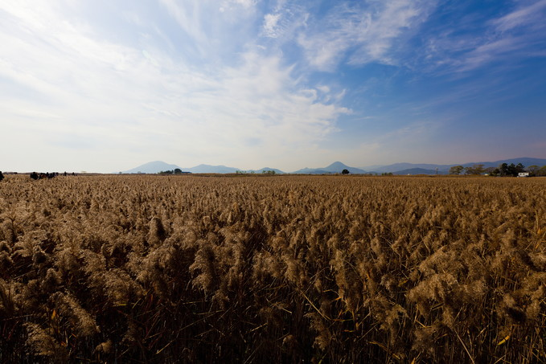⭐️⭐️⭐️⭐️
전라남도 순천시 순천만길에 위치한 전망대에서 바라본 일몰 . 전라남도 순천시 순천만길에 위치한 '순천만습지'는 세계 5대 연안습지로 160만평의 드넓은 갈대밭과 광활한 갯벌로 이루어져 있는 국내 대표적인 가을 나들이 장소이자 '사진작가들이 선정한 10대 낙조' 중 한 곳입니다..
더이상 할말이 있겠습니까.. 이미지로만 보고도..
"순천 드라마 세트장"
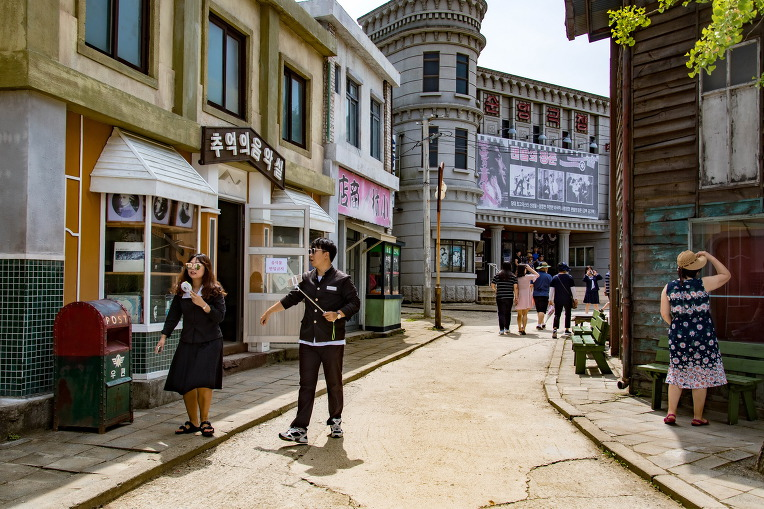 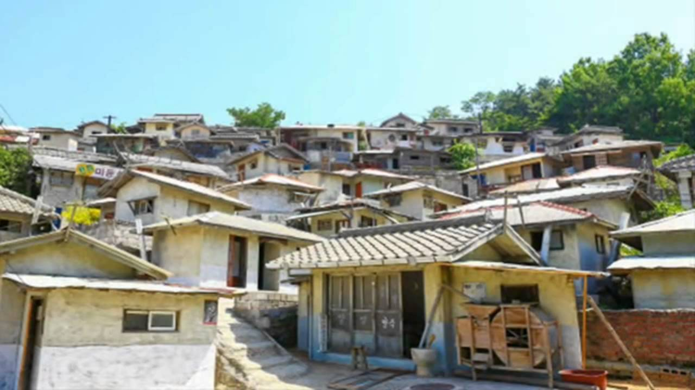⭐️⭐️⭐️⭐️
이곳은 원래 군부대 자리였으나 도심의 팽창으로 주변의 아파트가 들어서면서 군부대는 이전을 하게 되었습니다.
이 자리에 2006년 반영된 '사랑과 야망' 세트장이 조성이 되었고. 그 내용으로 우리 현대사를 돌아볼 수 있었습니다.
이 후 '에덴의 동쪽' , '제빵왕 김탁구' , '자이언트 등' 화려한 드라마의 세트장으로 사용이 되었습니다.
현대 사회 건물들을 보고 자란 10~20대 에게 추천드리는 장소입니다.
Landmark
보성 녹차밭
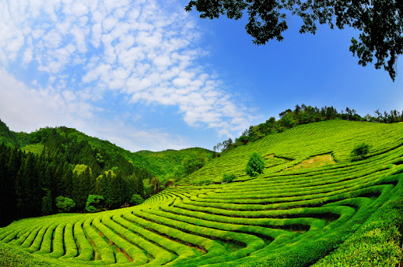⭐️⭐️⭐️⭐️⭐️
대한민국 녹차수도로 불리는 보성
전국구 관광지이자 녹차는 보성녹차를 빼놓을 수 없습니다
국내 최대 규모이며 삼나무숲길과 초록물결이 장관을 이루어 보성을 대표하는 이미지로 보여집니다 . 그중 가장 대표적인 곳이 대한다원으로서 처음 방문 하는사람들에게 꼭 ! 추천하는 곳입니다.
주변에 녹차까페가 많고 뷰가 많으므로 구경을하고 편하게 경치를 즐기면서 즐길수 있는 곳 입니다.
가서 시원한 녹차 한잔 또 먹고 싶네요...
목포대교
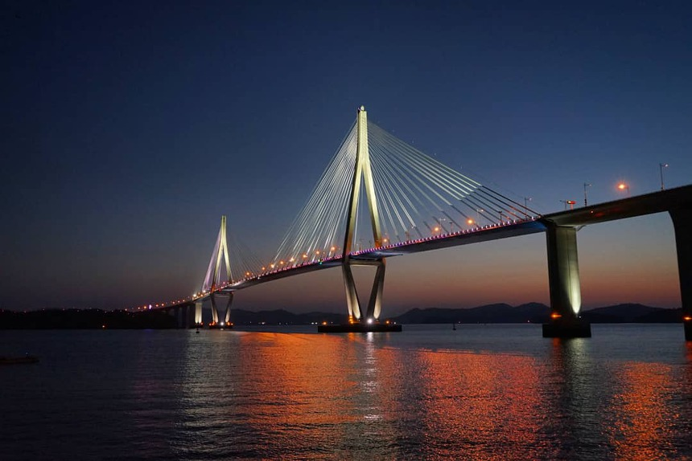 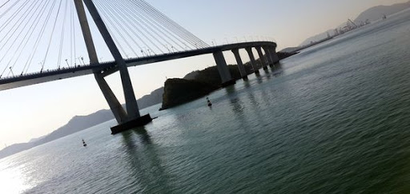⭐️⭐️⭐️⭐️
2008년 9월에 준목포대교는 세계 두 번째이자 국내에서는 처음 도입된 '삼면배치케이블 공법'을 적용하는 등
해상교량 기술의 신기원을 이뤘다는 평가를 받고 있는 명소입니다.
'삼변배치(3-way) 케이블 공법'은 보통 사장교가 다리 상판의 좌우측에 각각 2쌍의 케이블로 상판을 지탱하는 것과 달리
중앙에 설치되는 1쌍의 케이블이 추가되어 모두 3쌍의 케이블이 한줄로 상판을 지탱하는 공법을 사용하고있습니다.
고난이도 설계와 시공기술이 필요하지만 차량 운전자들에게 탁트인 경관을 제공해줍니다.
포대교의 주탑과 케이블은 목포의 시조인 학 두 마리가 목포 앞바다를 날아오르는 모습을 형상화하여 건설함으로써 운전자들이 교량을 건널 때 케이블의 모습이 마치 학이 날개 짓 하는듯한 시각효과를 느낄 수 있습니다.